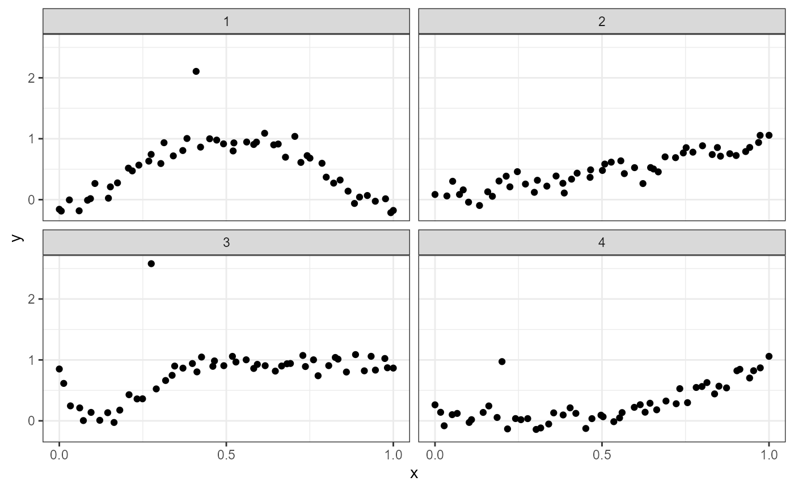
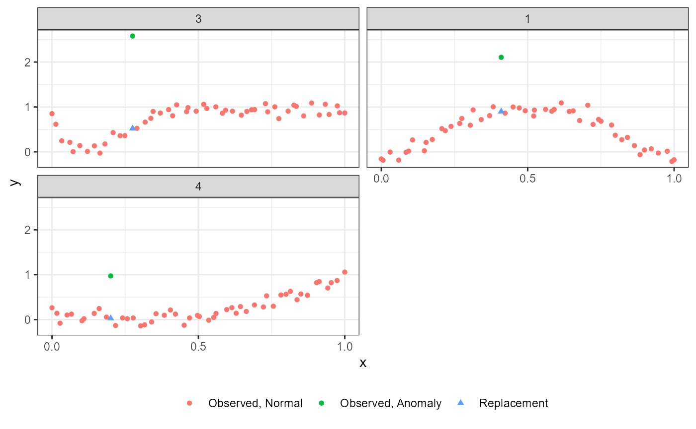

Example 1: German Hyperinflation
In our first example, we will analyze the hyperinflation in Weimar Germany during the 1920’s. The data are monthly measurements of Germany’s money supply and foreign exchange between 1921 and 1923.
Before the data can be analyzed, it must be put into the correct form
with columns for id, x and y.
(id is set to 1 because there is one subject.)
dat <- data.frame(id = 1,
x = log(GermanHyperinflation$pi),
y = GermanHyperinflation$logM)Now the data can be analyzed with the internally studentized residuals at the 0.05 significance level, and no p-value adjustment.
res <- adc(data = dat, eu = "in", pva = "none", alpha = 0.05)We can examine the anomalie(s),
table(res$ana)
#>
#> FALSE TRUE
#> 30 1
res[res$ana, ]
#> id x y ana rep apv
#> 29 1 2.956472 5.4269 TRUE 5.113726 0.03662636Only the 29th observation is determined to be anomalous.
The results can also be plotted to gain insight.
The anomalous observation (red circle) lies far from the downward trend exhibited by the surrounding observations. Furthermore, the replacement value (green triangle) is from the fitted curve.
Example 2: More subjects
In this example, we will use the functions supplied with the package related to the simulation study. Note that subjects 2 and 3 have anomalies of size 0 and 2 respectively, while subjects 1 and 4 have anomalies of size 1 (the default). Therefore, subject 3 will have the largest anomaly, while subject 2 does not have an anomaly.
set.seed(808)
dat1 <- rbind(create.data("Beta", 1),
create.data("Cos" , 2, 0),
create.data("Exp" , 3, 2),
create.data("Quad", 4))In the case of multiple subjects, we recommend plotting the results using ggplot2 to take advantage of facetting by subject.
library(ggplot2)
ggplot(dat1, aes(x, y)) +
geom_point() +
theme_bw() +
facet_wrap(~ id) +
scale_x_continuous(breaks = c(0, 0.5, 1))
We append some columns (ana, rep and
apv), then analyze the four subjects sequentially with a
for loop. The defaults of adc are used
corresponding with: the internally studentized residuals
(eu = "in"), the Bejamini & Yekutieli procedure
(pva = "BY") and 0.01 level
(alpha = 0.01).
dat2 <- data.frame(id = dat1$id,
x = dat1$x,
y = dat1$y,
ana = NA,
rep = NA,
apv = NA)
uid <- unique(dat2$id)
for(i in 1:length(uid)) {
rn <- dat2$id == uid[i]
dat2_i <- dat2[rn, ]
dat2[rn, ] <- adc(dat2_i)
}
table(dat2$ana)
#>
#> FALSE TRUE
#> 197 3
dat2[dat2$ana, ]
#> id x y ana rep apv
#> 21 1 0.4096191 2.1057509 TRUE 0.89850097 1.816381e-04
#> 114 3 0.2753408 2.5797026 TRUE 0.51994666 3.605029e-05
#> 161 4 0.2006365 0.9723378 TRUE 0.02662141 4.078343e-04As designed, anomalies were detected in subjects 1, 3 and 4; and
subject 3 has the smallest adjusted p-value (apv), which
corresponds with it being assigned the largest anomaly size. Thus, only
these subjects will be plotted according to their adjusted p-values.
dat3 <- prepplot(dat2)
ggplot(dat3, aes(x, y)) +
geom_point(aes(shape = tpe2, colour = tpe2)) +
scale_shape_manual(values = c(16, 16, 17)) +
labs(colour = NULL, shape = NULL) +
theme_bw() +
theme(legend.position = "bottom") +
facet_wrap(~ id2, nrow = 2) +
scale_x_continuous(breaks = c(0, 0.5, 1))